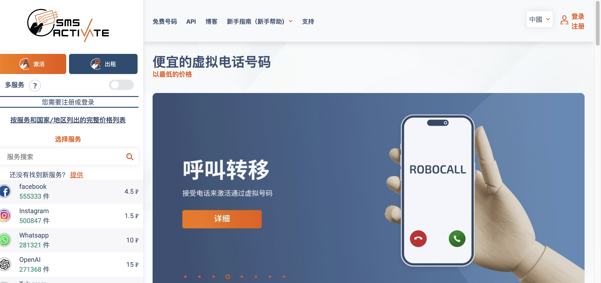
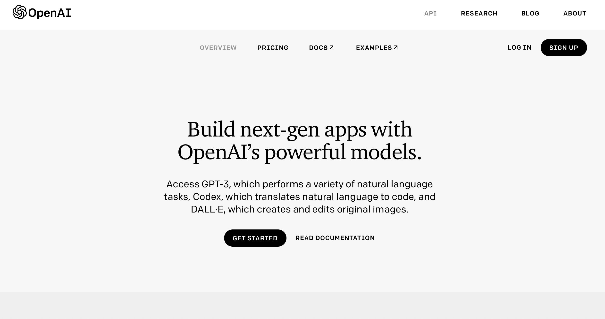
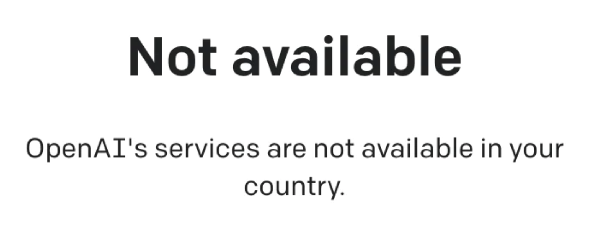
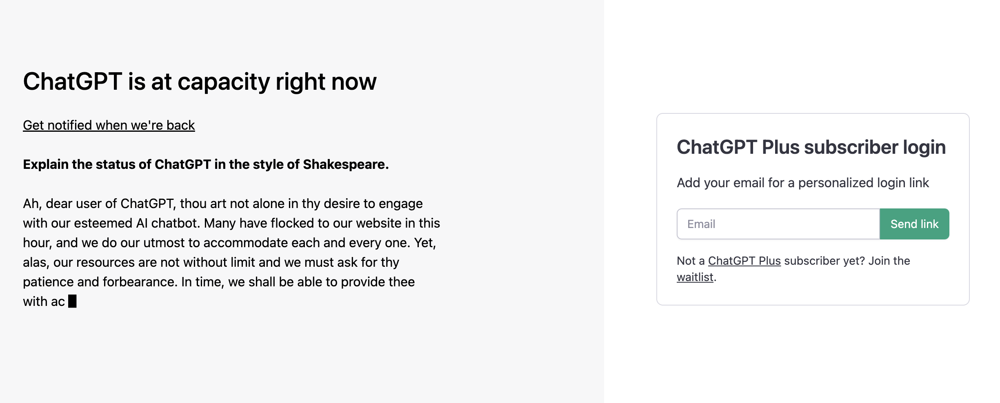

一.购买代理服务
即梯子，vpn，whatever。可以帮助你将ip地址包装成其他国家/地区，从而打开比如维基百科、chatgpt等学习网站。
已有代理服务的可以直接看下一节内容。如果觉得自己的梯子速度比较快的话也可以选择推荐给我。
没有的可以尝试自行搜索。考虑到百度现在ban了包括但不限于vpn,vnp,代理等关键词，实在搜不到的话可以尝试我的这个：https://user.viptwo.xyz
照着网址的说明去一步步做即可。
这个代理的花费是30CNY/月，again，如果有更好的选择请推给我。
二.购买接码服务
这一步主要是chatgpt限制只有国外手机号可以注册。
既然你已经完成了第一步，那么便可以打开全局代理，自行用谷歌搜索接码服务了。
或者也可以尝试我之前用的这个：https://sms-activate.org
界面长这样：

默认是英语，可以选择先在右上角的ENG那里改成中文版
然后在右上角点击注册，注册完了就登录，登录完了右上角会出现余额。点进去充值。
理论上购买一次接码服务只需要CNY1，但是它只允许充值美元，所以我们选择充值1美元，可选支付宝(AliPay)支付，大概CNY7。
充值完了之后返回首页，在左边栏找到OpenAi，也就是研发出chatgpt的那个公司。
点击OpenAi，然后选个国家，美日印新都可以，注意别买标注了<虚拟> 的就行，点击购物车图标进行购买。
之后会跳转页面并显示你购买的手机号。
三. 注册chatgpt账号
首先开启全局代理服务，选择非国内地区（hk也不行），然后打开openai 或https://openai.com/api/

点击右上角sign up进行注册。谷歌、微软账号或者邮箱注册都可以
按照提示去做，会跳到一步让你输入手机号，这时我们将第二步中购买的接码服务中的手机号复制粘贴过来
稍后会让你填写验证码，这时接码网站那里会显示它手机收到的验证码，同样复制粘贴过来即可。
注册成功后进入chatgpt 或 https://chat.openai.com/auth/login即可登录
登录完选择personal use即可在底部对话框与chatgpt进行对话了
四.第三步可能遇到的问题
1.接码服务过期了
一般的接码服务都是有限时的，所以过期很正常。只需要返回第二步再购买一次即可，因为我们之前充值的是1美元，所以大概可以买5-6次
2. 不服务您所在的国家/at capacity


首先检查代理是否开启（比如看看google.com能不能正确搜索），是否使用了香港节点。
如果还是不行，这里提供3种解决办法，请挨个试一遍
1）清除浏览器缓存，然后刷新页面
怎么清除浏览器缓存，建议自己搜一下对应的浏览器操作
2）在新标签页打开无痕模式，然后重新打开chatgpt并登录
3）按如下指示操作
复制下面这段代码：
window.localStorage.removeItem(Object.keys(window.localStorage).find(i=>i.startsWith('@@auth0spajs')))
然后在浏览器网址栏 键入 ：
javascript:
然后将代码粘贴进去，接着刷新